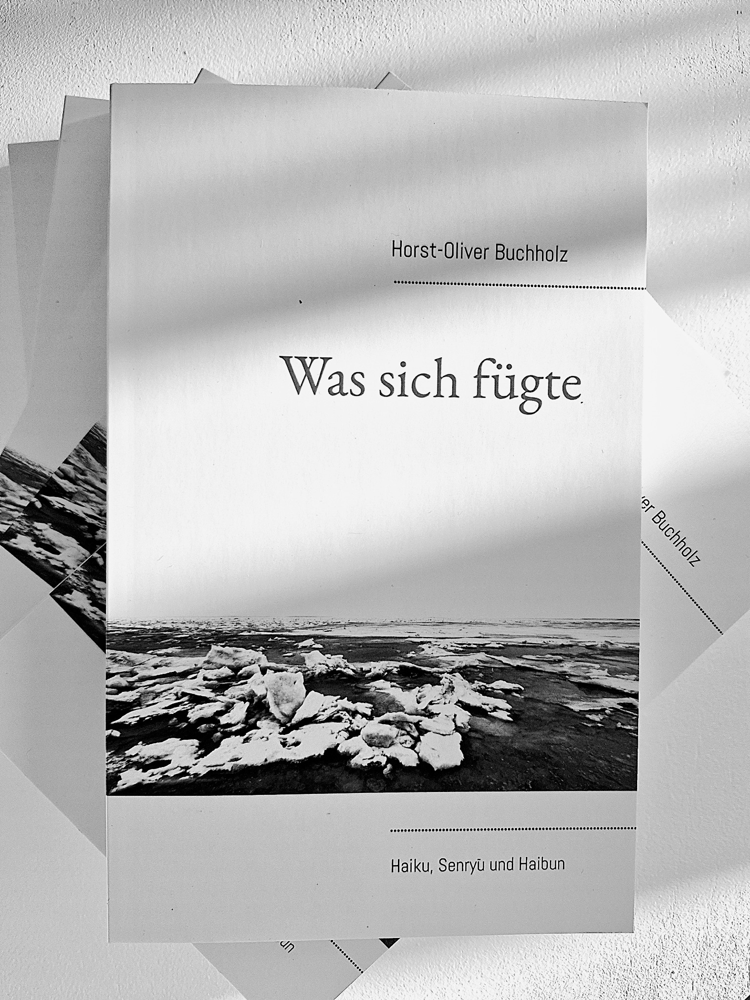
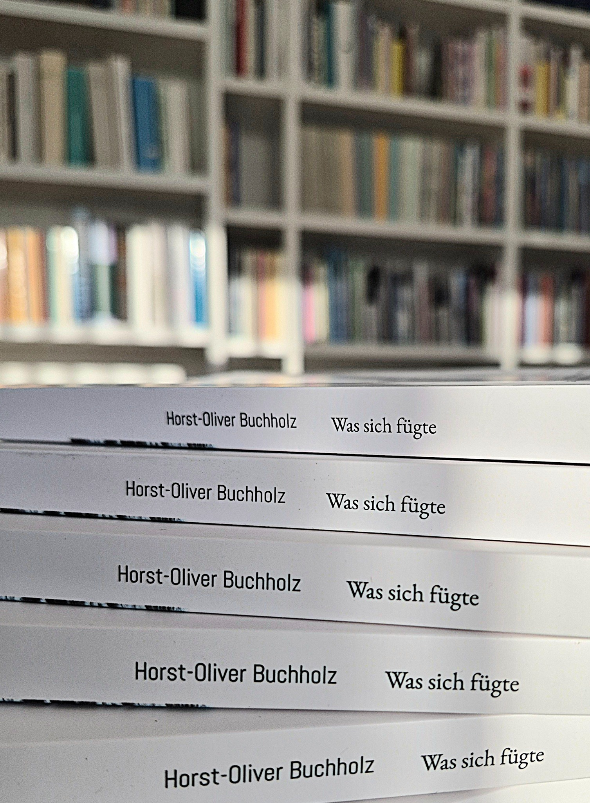
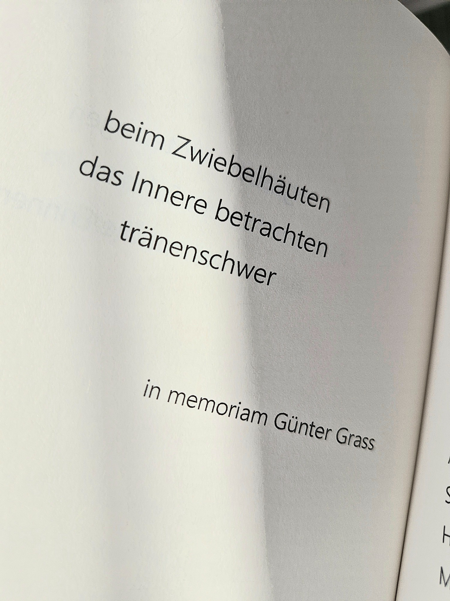
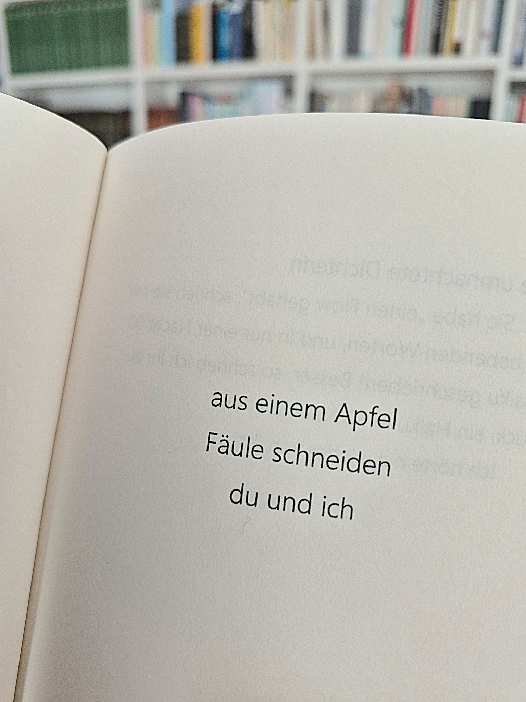
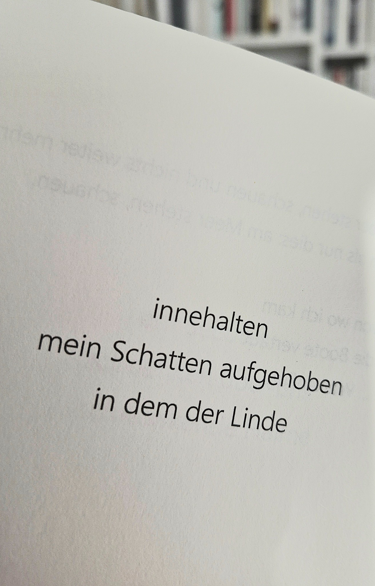

Eine Sammlung kurzer poetischer Formen über Meer, Licht, Liebe, Abschied, Erinnerung, Reise und die Sehnsucht nach Ruhe und Stille.
Der Titel erschließt sich über das Geleit des Autors: Das Fragment steht nicht für Unvollständigkeit, sondern für die Spur eines Zusammenhangs. Zwischen Naturbeobachtung und menschlicher Erfahrung öffnen die Texte kleine Räume des Innehaltens.
Nach seinem beeindruckenden Band Gesplitterte Zeit liegt nun ein neues Buch von Horst-Oliver Buchholz vor. Es verweist schon mit seinem weißen Cover und dem schönen schwarz-weiß Foto vom Sylter Strand von Eisschollen bedeckt auf eines der zentralen Themen: das Meer.
Der Titel des Buchs erschließt sich über das Geleit, das der Autor dieser Sammlung von Haiku, Senryū und Haibun vorangestellt hat: in einer „Hommage“ an den großen Philosophen Georg Wilhelm Hegel (1770–1831), dessen Erkenntnissatz: „Das Wahre ist das Ganze“ ein Schlüssel ist zum Verständnis und der Intention des gesamten Buchs. Denn wie der Autor dort hervorhebt ist ein „Fragment, […] nicht Unvollständigkeit, sondern die Spur eines Zusammenhangs.“ (S. 6) Umschlossen wird das Werk im Anhang noch von einer Danksagung an Alexander von Humboldt (1769–1859), für dessen Einsicht, in „die Versöhnung von Naturwissenschaft und Poesie.“ (. S. 164)
Thematisch erstrecken sich die Texte über Naturerscheinungen wie das Licht, die immer wiederkehrende Faszination für das Meer, anhropologischen Konstanten wie die Liebe und der Tod, Abschiede und Reisen, Erinnerungen an die Kindheit und vor allen Dingen die Sehnsucht nach Ruhe und Stille, oft mit einem Anklang an eine tief empfundene Spiritualität. Und immer wieder die Liebe, mal zärtlich und liebevoll, mal schmerzhaft im Trennungsprozess. Ein Haiku hält sich darin die Waage (S. 110):
Abschied nehmen
unser langer Schatten
durchdringt einen Zaun
Die erste Zeile gibt ganz konkret benannt das Thema vor: Ein Abschied ist gegenwärtig und steht noch bevor! Hier wird auf etwas Zukünftiges verwiesen – was kommt danach? Und wie mag es den beiden Protagonisten wohl in diesem Augenblick der Trennung ums Herz sein? Es scheint kein gewöhnlicher Abschied zu sein, kein alltäglicher, sonst gäbe es wohl keinen Anlass, diesen in einem Haiku zu verdichten. Ein weiteres Beispiel für die Darstellung von Liebe sei hier noch gegeben (S. 74):
erster Pinselstrich
mein Bild von ihr
endlos …
Spielerisch, malerisch umgesetzt und aufgrund der Dominanz der hellen Vokale wird die Leichtigkeit der vielleicht jungen, frischen Liebe – noch ist ihr Bild nicht veraltet, ja noch nicht einmal gemalt – spürbar. Sein inneres Bild von der Frau wird projiziert auf eine scheinbar noch leere Leinwand, die es wohl ausfüllen wird.
Formal werden bei den meisten Haiku die „gewohnten“ Merkmale gesetzt: dreizeilig und zentriert, daneben gibt es aber auch zweizeilige oder „versetzte“ dritte Verse, die, wie hier eingerückt, dem jeweiligen Inhalt dadurch noch mehr Nachdruck und Tiefe verleihen.
Ein Haiku, das ins Politische greift und gesellschaftskritische Töne anklingen lässt, sei hier genannt (S. 136):
Welthungertag
es blühen Rosen
aus Afrika
Ein Haiku, das kaum treffender die Diskrepanz in der Verteilung von Reichtum und Armut in der Welt ausdrücken könnte. Der Irrsinn, dass „Luxusgüter“ wie Rosen, die auch in unseren Breiten gut gedeihen, weite, die Umwelt schwer belastende Wege gehen, während in den Erzeugerländern Menschen am Nahrungsmangel sterben. Welch ein Zynismus!
Eindringlich drücken Horst-Oliver Buchholz’ Verse seine Faszination zur und über die Natur in wunderbaren Haiku-Sequenzen aus. Ein Beispiel muss hier genügen (S. 43):
wo das Meer endet
am Horizont
wo mein Schweigen beginnt
Philosophisch und mit spirituell unterlegter Kraft liest sich das wunderbare „Haiku-Triphtychon“: Galicien, (S. 140), in der die Schönheit, die Leichtigkeit und die Geborgenheit in und zu etwas Höherem sowie zu dem geliebten Menschen an der Seite eins werden können.
Daneben gibt es auch Haiku, die sich nicht gleich erschließen lassen, rätselhaft bleiben und dadurch um so mehr zu Gedankenspaziergängen einladen. Andere dagegen sind eindeutig, geben ein klares Bild, führen nicht zu verstiegenen Deutungen.
Seine Senryū lösen das ein, was sie sein sollten: schalkhaft, Augen zwinkernd (S. 149):
Männerfreundschaft
wir schweigen gemeinsam
ins leere Glas
Die in diesem Buch versammelten Haibun sind alle durchweg sehr kurz gehalten, was sie ja auch sein sollten. Die hohe Kunst, so ungemein treffend das Wesentliche prosaisch zu verdichten, gelingt dem Autor durchweg meisterhaft, auch wenn nur selten ein Haiku diese Texte abschließt, einleitet oder im Inneren verstärkt.
Nur manchmal verlässt der Autor die gewohnten Pfade des deutschsprachigen Haikuschreibens, missachtet die Merkmale, indem er ins Abstrakte rutscht, sich ins Sprachspielerische verliert. Aber auch diese, nicht den „Normen“ wie Konkretheit und Gegenwärtigkeit entsprechenden Haiku, zeichnen sich aus durch ein hohes Reflexionsvermögen.
Der Autor zeichnet sich auch für das Konzept, Layout und Gestaltung verantwortlich. Es gibt bis auf den Umschlag keine weiteren Bilder. Obwohl er auch ein ausgezeichneter Fotograf ist, hat er auf weitere illustrative Elemente verzichtet, weil – nach eigener Aussage –die Worte für sich allein sprechen sollen. Und das ist ihm großartig gelungen!
Und so gleiten die Augen und das Herz durch sprachliche Meditationen, poetische Kleinodien. Er gestattet es uns Lesenden, so viel – von uns selbst – zu entdecken, so viele Räume zu betreten und beschenkt uns mit kurzen, lang nachwirkenden Momenten, in denen wir Lesenden die Welt anhalten können.
Fotografische Eindrücke aus dem Buch und seiner Gestaltung.




Kurze Gedichte. Lange Nachwirkung. Räume zum Innehalten.
Zur Galerie